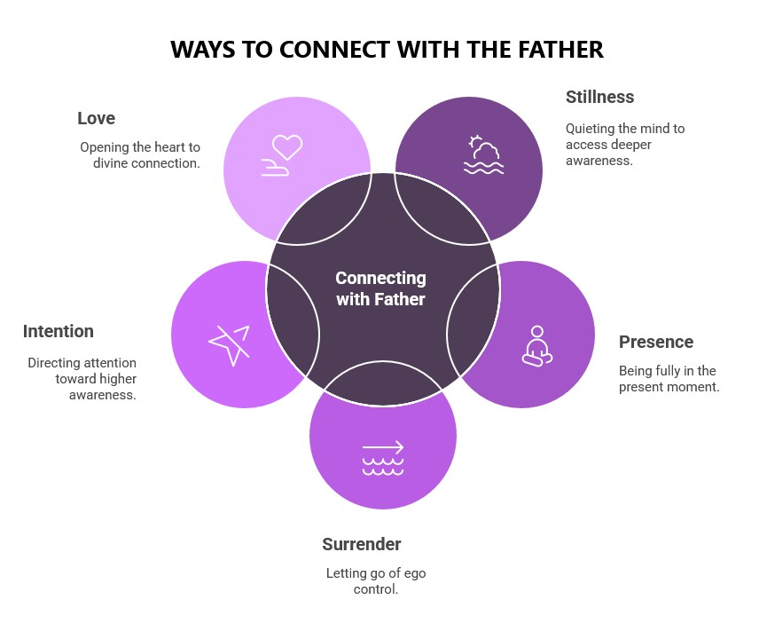

"Be still, and know that I am God." — Psalm 46:10
Now here's where the rubber meets the road—or rather, where the spirit meets the flesh. You've discovered your divine nature, you've grasped the profound truth that you're not some limited, separate being crawling through life. But knowing something and LIVING IT are two completely different animals. It's the difference between reading about surfing and actually riding a wave. Between studying a map and walking the territory.
Jesus wasn't talking about a literal room with four walls and a door. He was pointing to something infinitely more profound—that sacred space behind your thoughts, beneath your emotions, beyond your personality. It's the inner sanctuary where the Father dwells, where your true Self lives, where the connection to infinite consciousness happens. And "shutting the door"? That's your invitation to silence the mental noise and discover what's been waiting there all along.
Look at the pattern Jesus reveals: STILLNESS → INNER SEEING → OUTWARD ACTION. He never rushed into anything. He never operated from his own limited human perspective. Every move, every word, every miracle flowed from that deeper connection to the Father. And here's what's absolutely revolutionary: this isn't some exclusive superpower reserved for Jesus alone. This is your inheritance too. This is how you're designed to operate when you remember who you really are.
Jesus didn't just stumble upon his connection to the Father—he cultivated it with the same precision a master craftsman brings to his art. He understood something most of us miss: consciousness has architecture. There are specific frequencies, particular states of being, that open the doorway to divine union.
Think of it like tuning a radio. You can't just turn it on and expect to hear your favorite station clearly. You have to dial in the exact frequency. The same principle applies to connecting with the Father. There are five fundamental frequencies that, when aligned, create the perfect conditions for divine communion: Stillness, Presence, Surrender, Intention, and Love.
When these frequencies harmonize within you, something magical happens. You stop feeling like you're reaching OUT to find God. Instead, you realize God has been reaching IN all along, waiting for you to get quiet enough to notice.
Here's where things get fascinating: modern neuroscience is catching up to what mystics have known for millennia. When you regularly connect with that deeper consciousness—when you practice stillness, presence, and surrender—your brain literally transforms. Not metaphorically. Physically.
MRI scans show that regular meditation practice grows new neural pathways, thickens the brain regions responsible for attention and empathy, and quiets the mental chatter that keeps most people trapped in endless loops of worry and distraction. Your stress hormones drop, your "feel-good" neurotransmitters surge, and your entire nervous system shifts into what researchers call a "coherent" state—where your heart, brain, and body operate in perfect harmony.
But here's the mind-bending part: these aren't just pleasant side effects of relaxation. They're evidence of consciousness expanding beyond the boundaries of the individual brain. When you connect with the Father, you're not just calming down—you're tuning into a larger field of intelligence that operates through you, not just within you.
Jesus didn't just talk about connecting with the Father—he lived it as a daily reality. Every moment of his life was a demonstration of what becomes possible when you operate from that deeper consciousness. He showed us five essential qualities that, when cultivated, create the perfect conditions for divine union:
When these frequencies align within you, you stop feeling like you're trying to reach God. Instead, you realize God has been reaching through you all along. Your life becomes a living prayer, a continuous conversation with the divine. Every breath becomes communion. Every moment becomes sacred.
Jesus wasn't just giving us warm, fuzzy fellowship advice. He was revealing a fundamental law of consciousness—that aligned minds create an exponential amplification of spiritual power. When people genuinely connect with the Father together, something extraordinary happens: individual consciousness becomes collective consciousness, and the signal strength of divine connection multiplies beyond what any single person could achieve alone.
Modern science is beginning to understand this phenomenon. Research shows that when people meditate together with shared intention, their brain waves synchronize, their heart rhythms align, and measurable changes occur in their environment. It's not magic—it's physics meeting spirituality. Consciousness, it turns out, is contagious.
Now comes the most important part of our journey together. Understanding your divine nature is just the beginning. Knowing that you can connect with the Father is only the foundation. The real transformation happens when you start living from this consciousness—when every prayer becomes a conversation, every moment becomes sacred, and every breath becomes communion.
In the next chapter, you'll discover the practical blueprint for making this connection your daily reality. You'll learn the specific steps that Jesus modeled, the exact practices that open the doorway to divine union, and the precise techniques that transform your life from ordinary existence into extraordinary communion.
This isn't about becoming someone you're not. It's about remembering who you've always been and learning to live from that place consistently. Ready to step into your divine inheritance?